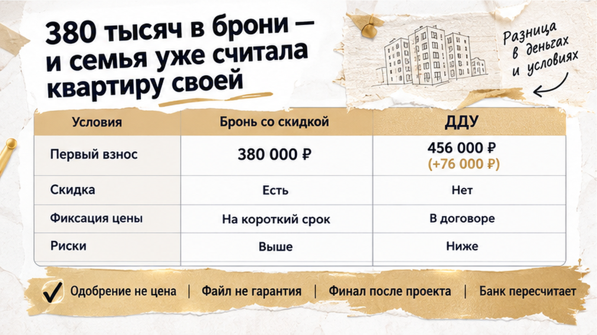
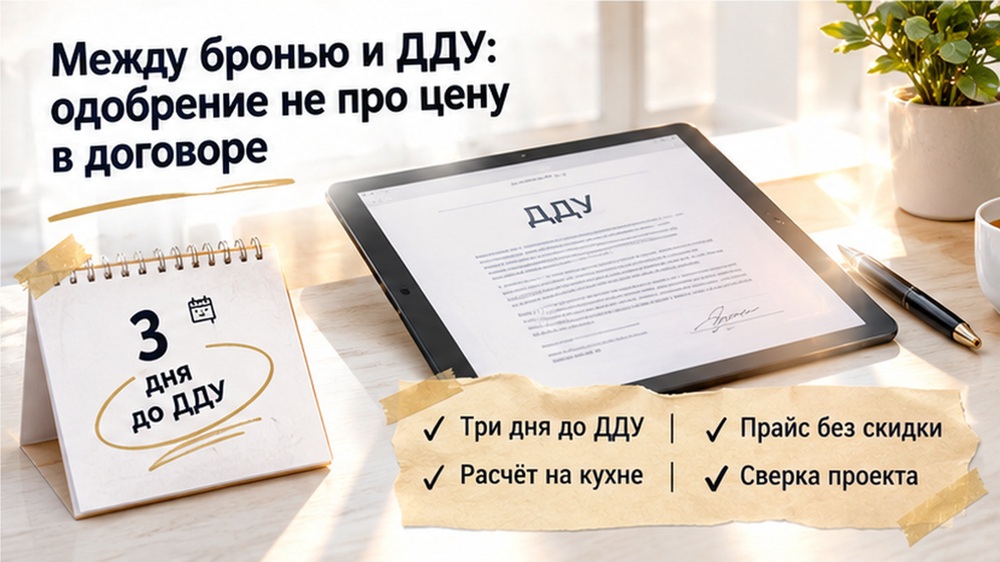
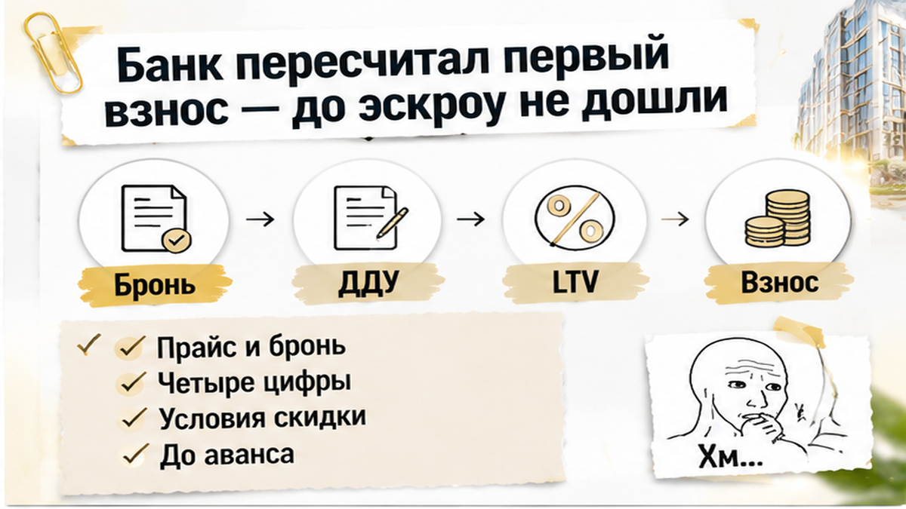
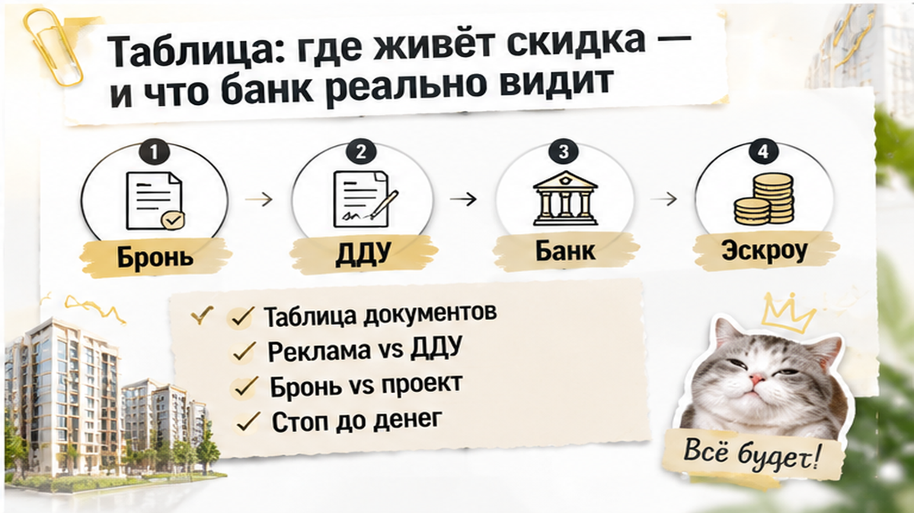

В Тюмени за три дня до подписания договора на новостройку у семьи пропала скидка около 380 000 ₽ — банк пересчитал первый взнос, и собственных денег на покупку понадобилось больше. До этого менеджер в офисе застройщика показывал цену по брони, от которой и считали ипотеку для предварительного одобрения. Вечером на кухне покупатели открыли ноутбук, чтобы сверить платежи с пришедшим проектом договора участия в долевом строительстве — ДДУ. В нём квартира стоила уже как в прайсе, без обещанного уменьшения цены. Теперь нужно было разобраться, что именно покупает семья: квартиру на согласованных условиях или ту же квартиру, но с другим бюджетом.
С вами Святослав Шакин, The Риэлтор, Тюмень. Почему между «вам одобрено» и подписанием могут измениться цифры, показываю в Telegram — смотрите разборы. Если готовитесь к покупке и хотите обсудить условия до брони, пишите мне в MAX.

Логика покупателей была понятной. Квартиру забронировали, в документах по брони и расчётах менеджера стояла цена со скидкой. Под неё прикинули первый взнос и сумму кредита, пока шла ипотечная процедура. Объект снят с продажи, цена записана, банк предварительно сказал «да». Что ещё должно измениться?
«Мы ведь уже забронировали по этой цене». Для покупателя это звучит как договорённость о покупке. Я в такой момент смотрю не только на сумму, но и на условия рядом с ней: на какой срок её предложили, при какой оплате она действует и что должно произойти до подписания. Придержать квартиру и закрепить все условия её покупки — не одно и то же.
Бронь может быть бесплатной или платной. Деньги за неё могут засчитываться в покупку, а могут быть платой за отдельную услугу; условия возврата тоже нужно читать в договоре. Само слово «бронь» не отвечает ни на один из этих вопросов. Поэтому нельзя автоматически считать, что внесённая сумма уже стала частью первого взноса.
Со скидкой та же история. Она может зависеть от даты подписания, способа оплаты, ипотечной программы или одобрения объекта конкретным банком. Пока эти условия не сопоставлены с проектом ДДУ, семейный расчёт остаётся предварительным.

«Но ипотеку же одобрили. Разве банк не проверил всё заранее?» Предварительное одобрение означает, что банк готов рассматривать кредит с учётом дохода, программы и предполагаемого взноса. Окончательное решение он принимает после проверки полного пакета документов, конкретной квартиры и цены в договоре. Это разные этапы, хотя покупателю они нередко кажутся одним большим «да».
Если квартира подорожала, кредит не обязательно вырастет вслед за ней. Банк может оставить прежнюю сумму — и тогда разницу придётся закрывать своими деньгами. Поэтому вопрос «мне одобрили ипотеку?» слишком общий. Для покупки нужен более точный ответ: какую сумму банк готов выдать именно на этот объект и при какой цене?
Похожая необходимость пересчитать покупку возникает, когда банк меняет условия накануне ДДУ. Но здесь дело было не в повышении ставки. Разошлись цена со скидкой и сумма в проекте договора, а для финальной проверки банку нужны документально согласованные стоимость квартиры и график платежей.
PDF и переписка с менеджером нужны: они помогают установить, что предлагали покупателю. Но сами по себе не гарантируют, что банк посчитает кредит по указанной там сумме. Даже отдельное письмо от юридического лица застройщика не заменяет банковского подтверждения. Важно, чтобы обещание скидки, итоговая цена в проекте ДДУ и расчёт кредита не противоречили друг другу.
Я бы не закрывал такое расхождение фразой «на подписании поправят». Сначала нужно получить согласованные цифры, затем оценивать, подходит ли покупка по бюджету. Иначе уверенность в одобрении есть, а ответа на главный вопрос — сколько собственных денег потребуется — ещё нет.
При сверке проекта выяснилось главное: итоговая стоимость квартиры не совпадала с расчётом по брони. В договоре стояла цена из прайса. Дело было не просто в отсутствии отдельной строки «скидка» — само уменьшение цены в сумме к оплате не отразилось.
«Но у нас же есть PDF, там всё написано». Для покупателя это понятный довод: квартиру выбрали по конкретной цене, под неё готовили деньги. Я в такой ситуации спрашиваю другое: на каких условиях действует предложение и где эти условия закреплены для выбранной квартиры? Обещанная сумма и обязательство заплатить по договору пока не совпадают.
Расхождение ещё не доказывало, что застройщик отменил акцию или нарушил договорённость. Скидка могла зависеть от срока подписания, способа оплаты, ипотечной программы или конкретного банка. Но и считать её действующей только потому, что менеджер прислал расчёт, было нельзя. Требовалось выяснить, почему в проект попала другая цена и какой документ подтверждает окончательную.
Здесь важно не спорить о том, кто что помнит, а сопоставить письменные условия. Скидка уже включена в стоимость квартиры? Её предоставят только при выполнении определённых требований? Срок предложения ещё действует? От ответов зависит не красота расчёта, а сумма, которую покупатель обязуется внести.
Похожий момент разобран в истории с неожиданным условием в проекте договора перед подписанием. Там вопрос касался перепродажи, здесь — стоимости. Общее одно: прочитать проект нужно тогда, когда ещё можно отказаться от неподходящих условий, а не после подписи.
Менеджер предложил уточнить финальную цену и заново проверить ипотечный расчёт. Это и стало следующим шагом: не искать объяснение, с которым можно поскорее подписать, а получить цифры, на которые действительно можно опереться.

Для банка изменение стоимости — повод заново проверить соотношение кредита и цены квартиры. Его называют LTV: простыми словами, это доля стоимости, которую оплачивает банк, а не покупатель. Предварительное одобрение не означает, что эта доля и сумма кредита сохранятся при любой цене в договоре.
При сохранении первого взноса 20% подорожание на 380 000 рублей требует ещё 76 000 рублей собственных денег. Но только если банк согласится увеличить кредит на оставшуюся часть разницы. Это арифметика при определённых условиях, а не подтверждённая сумма доплаты для семьи.
«То есть достаточно добавить эти деньги?» Не обязательно. Если банк оставит прежний размер кредита, покупателю придётся покрыть своими средствами всю разницу в стоимости. Поэтому сначала нужен новый расчёт банка, а уже потом — решение, посилен ли он. Считать бюджет по прежнему одобрению при новой цене нельзя.
У семьи оставались два направления: добиться подтверждения скидки у застройщика либо рассматривать покупку дороже, с дополнительными средствами и пересмотренной ипотекой. Ни PDF, ни устное обещание менеджера сами по себе не решали банковский вопрос. Нужно было согласовать цену квартиры, кредит и собственный взнос между собой.
Подписание остановили до уточнения условий и пересборки одобрения. До перечисления денег на эскроу — специальный счёт для оплаты новостройки — не дошли. Подтверждённый итог здесь не возвращённая скидка и не состоявшаяся покупка: семья не приняла обязательство по более дорогой квартире, пока не разобралась с её ценой и финансированием.
Достаточно ли PDF с условиями брони или скидку нужно заранее фиксировать письмом от юрлица застройщика?
После остановки сделки полезно не спорить о том, кто какую цену называл, а положить рядом документы. В них нужно сопоставить четыре вещи: стоимость по прайсу, условия скидки, сумму в брони и цену в проекте ДДУ. Это не четыре версии одной истины. Прайс даёт исходную стоимость, акция объясняет, при каких условиях её уменьшат, бронь фиксирует предложенные условия, а договор определяет, сколько покупатель обязуется заплатить.
«Но мы же уже внесли деньги за бронь». Здесь я отдельно смотрю, за что именно заплатил покупатель. Сумма может засчитываться в покупку, а может быть платой за услугу бронирования. Ответ находится в договоре брони, а не в названии платежа. Автоматически вычитать эти деньги из первоначального взноса нельзя.
Обычный покупатель видит скидку и считает, сколько сэкономил. Я сначала спрашиваю: где она закреплена, до какого момента действует и согласен ли банк считать кредит по этой цене? Это не недоверие к менеджеру. Просто его предложение, обязательство застройщика и решение банка — разные вещи, которые должны сойтись до подписания.
«Тогда достаточно взять письмо от застройщика?» Оно поможет уточнить условия, но не заменит остальные документы. В письме нужно проверить выбранную квартиру, итоговую цену, срок действия предложения и способ оплаты. Подтверждение от юридического лица застройщика может быть весомее переписки с менеджером, однако само по себе не обязывает банк выдать кредит по указанной сумме.
Вот короткая сверка перед деньгами. Не нужно искать самый убедительный документ и игнорировать остальные: важно, чтобы условия в них не противоречили друг другу.
| Где указана сумма | Что проверить | Что это значит для банка |
|---|---|---|
| Реклама или PDF | Итоговую цену и условия акции | Предложение не гарантирует окончательный расчёт кредита |
| Бронь | Срок, фиксацию цены, основания её изменения и назначение платежа | Не заменяет одобрение объекта и проверку проекта ДДУ |
| Письмо юрлица застройщика | Скидку именно для выбранной квартиры и способа оплаты | Достаточность подтверждения зависит от условий сделки |
| Проект ДДУ | Полную стоимость и график платежей | Эти суммы нужно согласовать с кредитом и собственными деньгами покупателя |

Само расхождение ещё не доказывает нарушение со стороны застройщика. Возможно, нужно уточнить срок акции, способ оплаты или условия ипотечной программы. Но и предварительное банковское «да» не снимает вопрос: в разборе пути от одобрения ипотеки до эскроу видно, почему окончательное решение требует полного пакета документов.
Такие развилки разбираю в Telegram и MAX. Можно смотреть разборы заранее, пока выбор квартиры ещё не превратился в обязательство заплатить за неё.
Рабочая точка проверки — до брони или аванса: запросить письменные условия скидки и понять, как они попадут в договор. Перед подписанием — сопоставить окончательную цену с банковским расчётом. Если суммы разошлись, не рассчитывать на «потом поправим», а получить объяснение застройщика и подтверждение банка.
Пауза не возвращает скидку автоматически и не делает покупку удачной. Зато она оставляет вам выбор: добиваться подтверждения прежних условий, оценивать новый бюджет или отказываться от неподходящего варианта. Решать это лучше до обязательства оплатить более дорогую квартиру, а не после.